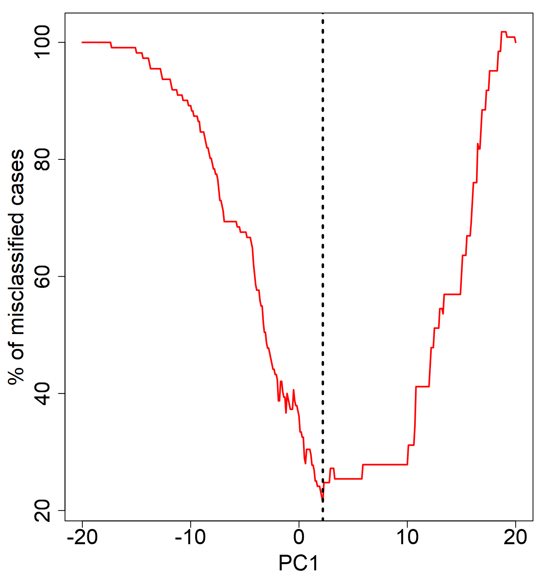
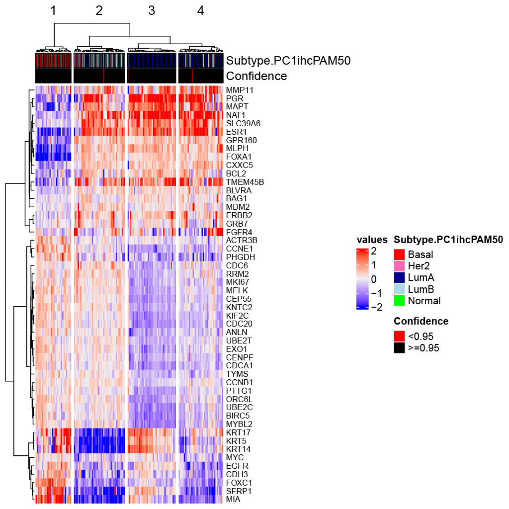
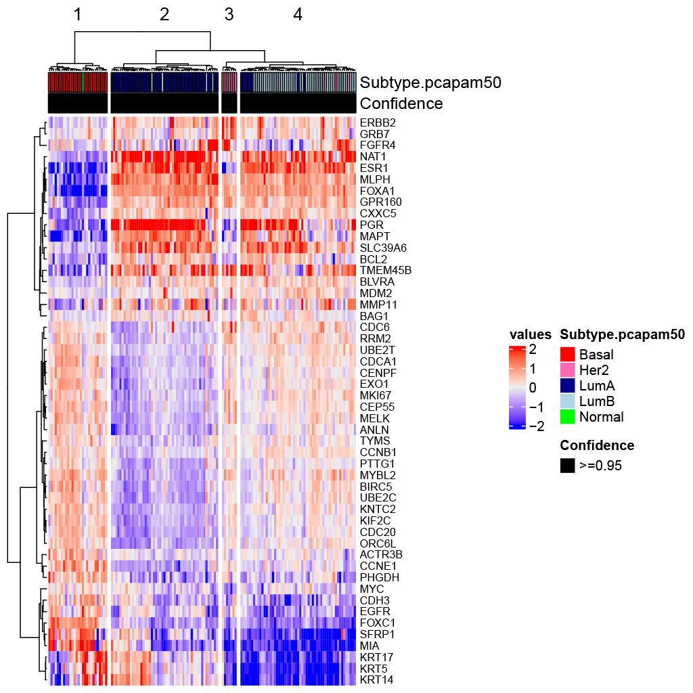
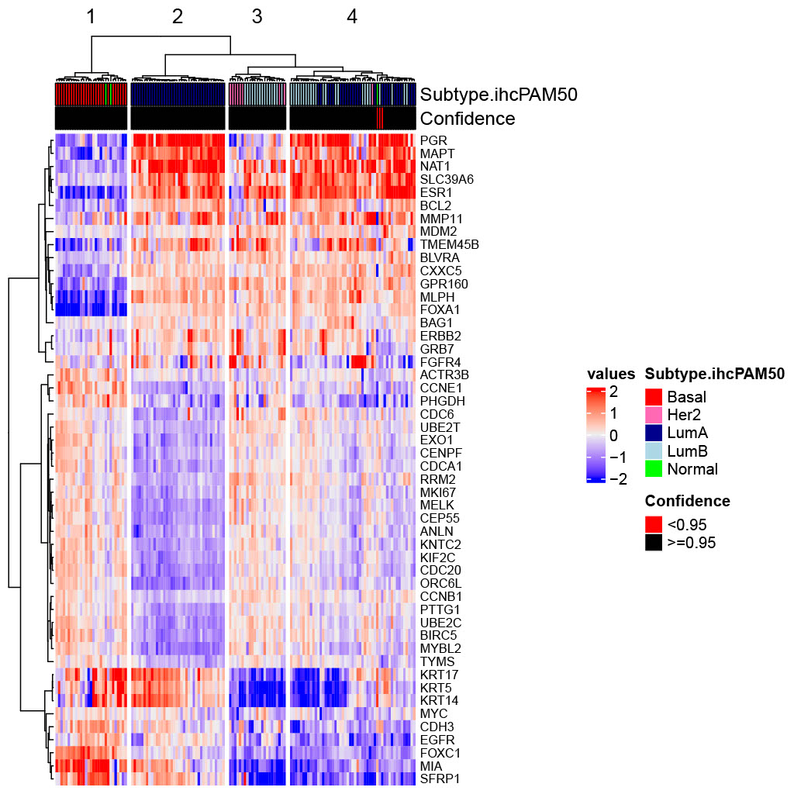

PCAPAM50
- What is PCAPAM50?
- Instructions
- The PCAPAM50 Approach
- The Conventional PAM50 Approach
- PCA Plotting - my.plotPCA
- Comparing Results - PCAPAM50 vs PAM50
- Frequently Asked Questions
- Install
- News and Updates
What is PCAPAM50?
Accurate classification of breast cancer tumors based on gene expression data is not a trivial task, and it lacks standard practices. The PAM50 classifier makes calls based on the 50 gene centroid correlation distance to LA, LB, Basal, Her2 and normal-like centroids. However, the application of the PAM50 algorithm has its challenges. The two main challenges are (1) balancing estrogen receptor (ER) status and (2) the gene centering procedures. The PAM50 classifier works accurately if the original cohort/dataset is ER status-balanced. However, this is often not the case with most genome-wide studies. In such cases, a conventional strategy is to choose a subset which is ER status-balanced and use the median derived from that subset to gene center the entire cohort. In practice, an ER-balanced subset is chosen based on IHC-defined ER status. There have been reports of IHC-defined ER status, which is based on protein expression, not being completely consistent with ER status defined by gene expression. This inconsistency may impact the accuracy of the subsequent gene centering procedure which is aimed to minimize the bias of the dynamic range of the expression profile per sequencing technology. As a result, such inconsistency may contribute to the discrepancy between the IHC and PAM50 subtyping results. Hence, we explored the possibility of using a gene expression-based ER-balanced subset for gene centering leveraging principal component analyses (PCA) and iterative PAM50 calls to avoid introducing protein expression-based data into a gene expression-based subtyping method. The PCAPAM50 R package was created as a means to easily distribute this new method for tumor classification.
Package Structure

Diagram of Package Structure: View in a new tab for a larger image.
The PCAPAM50 package consists of 5 core directories. Each of their purposes and components can be seen in the above diagram. Most notably, the package comes with sample and The Cancer Genome Atlas (TCGA) data to demonstrate running the program. Further information and a step-by-step guide utilizing these datasets can be found on the Instructions page. After testing, you can substitute these files to make calls for your data.
Function Structure

Diagram of General Function Structure: View in a new tab for a larger image.
This is the general structure for the majority of the functions found in the package. Detailed usage and argument instructions can be found using ?function_name in R or by viewing the manual. Additionally, examples utilizing these functions can be found on the Instructions page.
Copyright and License
Copyright 2018 Windber Reseach Institute, Windber, PA - 15963. All Rights Reserved.
Contact:
Developer: Praveen K. Raj Kumar [P.RajKumar@wriwindber.org]
Lab director: Hai Hu [H.hu@wriwindber.org]
This program is free software: you can redistribute it and/or modify it under the terms of the GNU General Public License as published by the Free Software Foundation, either version 3 of the License, or (at your option) any later version.
You should have received a copy of the GNU General Public License along with this program. If not, see GNU licenses.
Instructions
Pipeline Overview
The PCAPAM50 pipeline consists of two steps: First, creating a gene expression-guided ER-balanced subset to make intermediate subtype calls, and second, using these intermediate subtype calls to perform a refined intrinsic subtyping called PCAPAM50. This page focuses on the PCAPAM50 appraoch. For instructions on the Conventional PAM50 approach, please visit its respective page.
1. makeCalls.PC1ihc - Intermediate Intrinsic Subtype Calls
This function processes clinical IHC subtyping data and PAM50 gene expression data to form a gene expression-guided ER-balanced set. This set is created by combining IHC classification information and using principal component 1 (PC1) to guide the separation. The function computes the median for each gene in this ER-balanced set, updates a calibration file, and runs subtype prediction algorithms to generate intermediate intrinsic subtype calls based on the PAM50 method. Various diagnostics and subtyping results are returned.
1) Load the Test data:
The test data is derived from the TCGA breast cancer dataset. The test matrix is an upper-quartile (UQ) normalized log2(x+1) transformed dataset of PAM50 gene expression from RNA-Seq data. It is recommended to perform UQ normalization and log2 transformation on your input matrix to closely align with the scale of PAM50 centroids.
data_path <- system.file("extdata", "Sample_IHC_PAM-Mat.Rdat", package = "PCAPAM50") load(data_path) # Loads Test.ihc and Test.matrix
2) Prepare the Data:
Ensure the clinical subtype data frame has a column “PatientID” matching the column names of the matrix. The IHC subtype column should be named “IHC,” with ER-positive subtypes starting with “L” (for luminals) and ER-negative subtypes not starting with “L.” In the test data, ER-positive cases are labeled “LA,” “LB1,” “LB2,” and ER-negative cases are labeled “TN” and “Her2+”. The data must be sorted properly:
Test.ihc$ER_status <- rep("NA", length(Test.ihc$PatientID)) Test.ihc$ER_status[grep("^L",Test.ihc$IHC)] = "pos" Test.ihc$ER_status[-grep("^L",Test.ihc$IHC)] = "neg" Test.ihc <- Test.ihc[order(Test.ihc$ER_status, decreasing = TRUE),]
Display the sorted data:
Test.ihc$ER_status=factor(Test.ihc$ER_status, levels=c("pos", "neg")) Test.ihc$IHC=factor(Test.ihc$IHC, levels=c("TN", "Her2+", "LA", "LB1", "LB2")) table(Test.ihc$ER_status, Test.ihc$IHC) # TN Her2+ LA LB1 LB2 # pos 0 0 19 65 27 # neg 23 7 0 0 0
Let’s examine the matrix. First, sort the test matrix using the IHC dataframe:
Test.matrix <- Test.matrix[, Test.ihc$PatientID]
Next, check the dimensions of the Test.matrix:
dim(Test.matrix) #[1] 50 141
This matrix contains the 50 PAM50 genes and expression values for 141 samples.
Important note: Ensure that your input matrix is also matched with the 50 gene names provided in the test matrix.
3) Create the Clinical Subtype Data Frame:
Create a clinical subtype data frame using the provided test files. The inputDir determines the output folder.
df.cln <- data.frame(PatientID = Test.ihc$PatientID, IHC = Test.ihc$IHC, stringsAsFactors = FALSE) inputDir <- "Call.PC1"
4) Call the Function:
Run the makeCalls.PC1ihc function. Refer to the manual for detailed documentation on usage and arguments. Example run on test data:
res.PC1 <- makeCalls.PC1ihc(df.cln = df.cln, seed = 118, mat = Test.matrix, inputDir = inputDir)
The function returns a list containing:
- Int.sbs - Data frame with integrated subtype and clinical data. - score.fl - Data frame with scores from subtype predictions. - mdns.fl - Data frame with median values for each gene in the ER-balanced set. - SBS.colr - Colors associated with each subtype from the prediction results. - outList - Detailed results from subtype prediction functions. - PC1cutoff - Cutoff values for PC1 used in subsetting. - DF.PC1 - Data frame of initial PCA results merged with clinical data.
It generates a plot within the inputDir folder displaying the percentage of misclassified IHC cases along the PC1 axis with the vertical line identified as the cutoff.
PC1_misclassified_cases.png
A heatmap is also generated within the inputDir folder.
PC1ihc.Mdns_PAM50_normalized_heatmap.pdf
2. makeCalls.v1PAM - PCAPAM50 Calls
This function uses the intermediate intrinsic subtype calls to create an ER-balanced set. It internally selects an equal number of Basal and LumA cases to form this subset.
1) Call the Function:
Call the function makeCalls.v1PAM() on test data. Refer to the manual for detailed documentation on usage and arguments.
df.pc1pam = data.frame(PatientID=res.PC1$Int.sbs$PatientID, PAM50=res.PC1$Int.sbs$Int.SBS.Mdns.PC1ihc, IHC=res.PC1$Int.sbs$IHC, stringsAsFactors=F) ### IHC column is optional inputDir <- "Calls.PCAPAM50" res.PCAPAM50 <- makeCalls.v1PAM(df.pam = df.pc1pam, seed = 118, mat = Test.matrix, inputDir=inputDir)
The function returns a list containing:
- Int.sbs - Data frame with integrated subtype and clinical data. - score.fl - Data frame with scores from subtype predictions. - mdns.fl - Data frame with median values for each gene in the ER-balanced set. - SBS.colr - Colors associated with each subtype from the prediction results. - outList - Detailed results from subtype prediction functions.
A heatmap is generated within the inputDir folder.
PCAPAM50.Mdns_PAM50_normalized_heatmap.pdf
The Conventional PAM50 Approach
For comparison with PAM50 cases, we provide the function makeCalls.ihc to produce conventional PAM50 intrinsic subtype calls. Please note that the setup (loading the test data) is the same as in Step 1 of the PCAPAM50 approach.
1) Call the Function:
Call the function makeCalls.ihc() on test data. Refer to the manual for detailed documentation on usage and arguments.
inputDir <- "Calls.PAM50"
res.PAM50 <- makeCalls.ihc(df.cln = df.cln, seed = 118, mat = Test.matrix, inputDir = inputDir)
The function returns a list containing:
- Int.sbs - Data frame with integrated subtype and clinical data. - score.fl - Data frame with scores from subtype predictions. - mdns.fl - Data frame with median values for each gene in the ER-balanced set. - SBS.colr - Colors associated with each subtype from the prediction results. - outList - Detailed results from subtype prediction functions.
A heatmap is generated within the inputDir folder.
Ihc.Mdns_PAM50_normalized_heatmap.pdf
PCA Plotting - my.plotPCA
An example usage of this function is as follows:
pData = data.frame(condition=Test.ihc$IHC) rownames(pData) = Test.ihc$PatientID phenoData = new("AnnotatedDataFrame", data=pData) XSet = ExpressionSet(assayData=Test.matrix, phenoData=phenoData) #--Please ensure that the colors are ordered corresponding to the levels in your condition #--For example, my condition levels are Levels: TN Her2+ LA LB1 LB2 so the colors are my.plotPCA(XSet, intgroup=pData$condition, ablne=2.4, colours = c("red", "hotpink", "darkblue", "lightblue", "lightblue3"), LINE.V = T)
Comparing Results - PCAPAM50 vs PAM50
This section demonstrates the improvement in the accuracy of PCAPAM50 subtyping over PAM50 subtyping.
Test Data - PCAPAM50 vs PAM50
For the test data, we compare the accuracy of PCAPAM50 subtyping over PAM50 subtyping by comparing the intrinsic subtype calls to the IHC calls.
Below is the comparison of test data PAM50 calls and IHC subtype calls agreement:
res.PAM50$Int.sbs$IHC = factor(res.PAM50$Int.sbs$IHC, levels = c("TN", "HER2+", "LA", "LB1", "LB2")) addmargins(table(res.PAM50$Int.sbs$Int.SBS.Mdns.PAM50, res.PAM50$Int.sbs$IHC)) # TN HER2+ LA LB1 LB2 Sum # Basal 20 3 0 4 0 27 # Her2 2 3 0 0 4 9 # LumA 0 0 17 33 14 64 # LumB 1 0 2 26 9 38 # Normal 0 1 0 2 0 3 # Sum 23 7 19 65 27 141
Agreements:
Basal.TN agreement = 20/27 Her2.HER2+ agreement = 3/9 LumA.LA agreement = 17/64 LumB.LB1/LB2 agreement = 35/38
Here is the comparison of test data PCAPAM50 calls and IHC subtype calls agreement:
res.PCAPAM50$Int.sbs$IHC=toupper(res.PCAPAM50$Int.sbs$IHC) res.PCAPAM50$Int.sbs$IHC = factor(res.PCAPAM50$Int.sbs$IHC,levels = c("TN", "HER2+", "LA", "LB1", "LB2")) addmargins(table(res.PCAPAM50$Int.sbs$Int.SBS.Mdns.PCAPAM50, res.PCAPAM50$Int.sbs$IHC)) # TN HER2+ LA LB1 LB2 Sum # Basal 20 3 0 4 0 27 # Her2 2 4 0 0 4 10 # LumA 0 0 17 27 11 55 # LumB 1 0 2 33 12 48 # Normal 0 0 0 1 0 1 # Sum 23 7 19 65 27 141
Agreements:
Basal.TN agreement = 20/27 Her2.HER2+ agreement = 4/10 LumA.LA agreement = 17/55 LumB.LB1/LB2 = 45/48
Upon comparison, we can see that PCAPAM50 has an overall agreement of 86/141 = 61%, which is an improvement of 7% over the PAM50 calls. If you closely examine the results, you will notice that the consistency of IHC LB subtype with LumB increased by 28.5%(35 to 45) with PCAPAM50.
TCGA Data - PCAPAM50 vs PAM50
In order to demonstrate improvements and replicate the results from the original paper, we obtained the 712 TCGA breast cancer cases from the original study where we derived IHC calls. This data is provided with the PCAPAM50 package. Follow the examples below to run the analysis. The conventional PAM50 calls obtained in the paper are included in the dataset, so only running PCAPAM50 is necessary to show the improvement.
1) Load TCGA data:
tcga_data_path <- system.file("extdata", "TCGA.712BC_IHC_PAM-Mat.Rdat", package = "PCAPAM50") load(tcga_data_path) # Loads "TCGA.712BC.IHC" "TCGA.712BC.matrix"
2) Prepare the data:
TCGA.712BC.IHC$ER_status <- rep("NA", length(TCGA.712BC.IHC$PatientID)) TCGA.712BC.IHC$ER_status[grep("^L",TCGA.712BC.IHC$IHC)] = "pos" TCGA.712BC.IHC$ER_status[-grep("^L",TCGA.712BC.IHC$IHC)] = "neg" TCGA.712BC.IHC <- TCGA.712BC.IHC[order(TCGA.712BC.IHC$ER_status, decreasing = TRUE),]
Display the sorted data:
TCGA.712BC.IHC$ER_status=factor(TCGA.712BC.IHC$ER_status, levels=c("pos", "neg")) TCGA.712BC.IHC$IHC=factor(TCGA.712BC.IHC$IHC, levels=c("TN", "Her2+", "LA", "LB1", "LB2")) table(TCGA.712BC.IHC$ER_status, TCGA.712BC.IHC$IHC) # TN Her2+ LA LB1 LB2 # pos 0 0 111 325 123 # neg 116 37 0 0 0
Let’s examine the matrix. First, sort the test matrix using the IHC dataframe:
TCGA.712BC.matrix <- TCGA.712BC.matrix[, TCGA.712BC.IHC$PatientID] dim(TCGA.712BC.matrix) #[1] 50 712
This matrix has the 50 PAM50 genes and 712 sample expression values. This is already an upper-quartile (UQ) normalized log2(x+1) transformed dataset of PAM50 gene expression from RNA-Seq data.
3) Create the Clinical Subtype Data Frame:
df.tcga.cln <- data.frame(PatientID = TCGA.712BC.IHC$PatientID, IHC = TCGA.712BC.IHC$IHC, stringsAsFactors = FALSE) inputDir <- "Call.PC1.TCGA"
4) Call the Function:
res.PC1 <- makeCalls.PC1ihc(df.cln = df.tcga.cln, seed = 118, mat = TCGA.712BC.matrix, inputDir = inputDir)
5) makeCalls.v1PAM:
df.pc1pam = data.frame(PatientID=res.PC1$Int.sbs$PatientID, PAM50=res.PC1$Int.sbs$Int.SBS.Mdns.PC1ihc, IHC=res.PC1$Int.sbs$IHC, stringsAsFactors=F) ### IHC column is optional inputDir <- "Calls.PCAPAM50.TCGA" TCGA.712BC.matrix = TCGA.712BC.matrix[,df.pc1pam$PatientID] res.PCAPAM50 <- makeCalls.v1PAM(df.pam = df.pc1pam, seed = 118, mat = TCGA.712BC.matrix, inputDir=inputDir)
6) PCAPAM50 vs PAM50:
PAM50 vs IHC:
addmargins(table(TCGA.712BC.IHC$PAM50_Given.Mdns, TCGA.712BC.IHC$IHC)) # TN Her2+ LA LB1 LB2 Sum # Basal 100 7 1 12 1 121 # Her2 9 29 0 4 19 61 # LumA 2 0 100 200 64 366 # LumB 1 0 5 100 36 142 # Normal 4 1 5 9 3 22 # Sum 116 37 111 325 123 712
Agreements:
Basal.TN agreement = 100/121 Her2.HER2+ agreement = 29/61 LumA.LA agreement = 100/366 LumB.LB1/LB2 agreement = 136/142
PCAPAM50 vs IHC:
res.PCAPAM50$Int.sbs$IHC=toupper(res.PCAPAM50$Int.sbs$IHC) res.PCAPAM50$Int.sbs$IHC = factor(res.PCAPAM50$Int.sbs$IHC,levels=c("TN", "HER2+", "LA", "LB1", "LB2")) addmargins(table(res.PCAPAM50$Int.sbs$Int.SBS.Mdns.PCAPAM50, res.PCAPAM50$Int.sbs$IHC)) # TN HER2+ LA LB1 LB2 Sum # Basal 99 7 0 12 1 119 # Her2 10 30 0 7 24 71 # LumA 3 0 103 168 43 317 # LumB 2 0 6 135 55 198 # Normal 2 0 2 3 0 7 # Sum 116 37 111 325 123 712
Agreements:
Basal.TN agreement = 99/119 Her2.HER2+ agreement = 30/71 LumA.LA agreement = 103/317 LumB.LB1/LB2 agreement = 190/198
Upon comparison, we can see that PCAPAM50 has an overall agreement of 422/712 = 59.3%, which is an improvement of 8% over the PAM50 calls. If you closely examine the results, you will notice that the consistency of IHC LB subtype with LumB increased by 39.7%(136 to 190) with PCAPAM50.
Frequently Asked Questions
Nothing for now, check back later!
Install
Prerequisites
Ensure you have R version 4.0 or above installed on your computer or server. The PCAPAM50 package relies on other R packages available from CRAN and Bioconductor. To ensure compatibility, upgrade Bioconductor to the latest version (BiocManager v3.19). Once R and Bioconductor are properly installed, you can proceed with the installation process.
Installing Dependencies
Dependencies: Biobase, lattice, ComplexHeatmap, and impute. You can install these packages using the following commands:
if (!require("BiocManager", quietly = TRUE)) install.packages("BiocManager") BiocManager::install("ComplexHeatmap") BiocManager::install("impute") BiocManager::install("Biobase") install.packages("lattice")
Installing PCA-PAM50
To install PCA-PAM50 from CRAN, use the following command:
install.packages("PCAPAM50")
Alternatively, to install the package from a tar.gz file, use:
install.packages("PCAPAM50_1.0.0.tar.gz", repos = NULL, type = "source")
Loading PCA-PAM50 and Dependencies
After installation, load the PCAPAM50 package and the required libraries in your R session:
library("PCAPAM50") library("Biobase") library("lattice") library("ComplexHeatmap") library("impute")
News and Updates
Nothing for now, check back later!